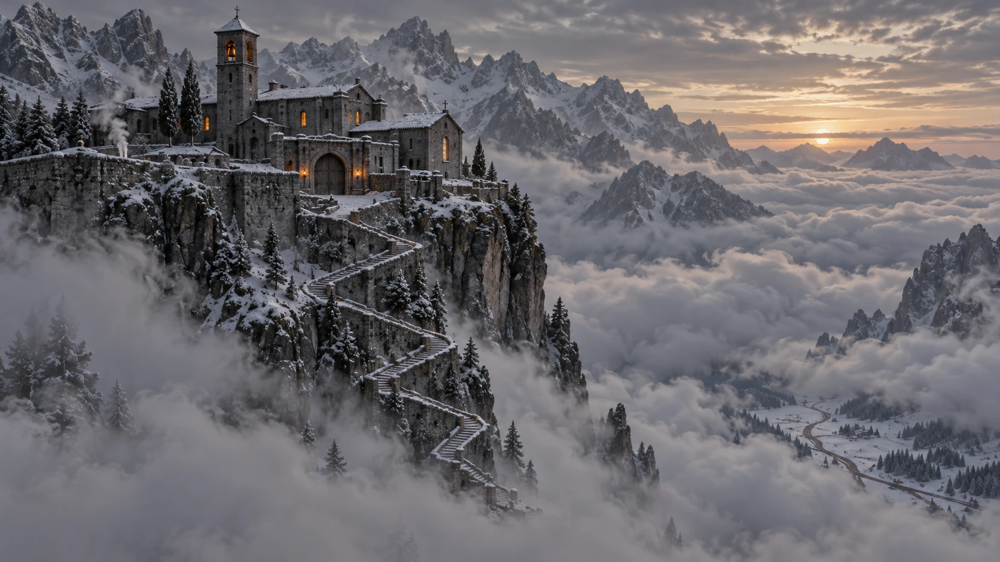
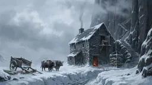
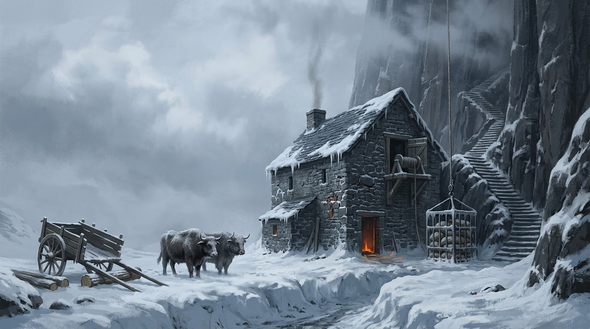
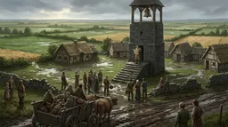
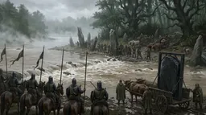
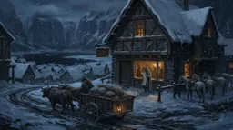
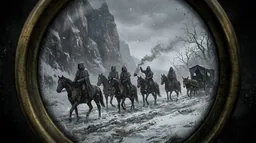
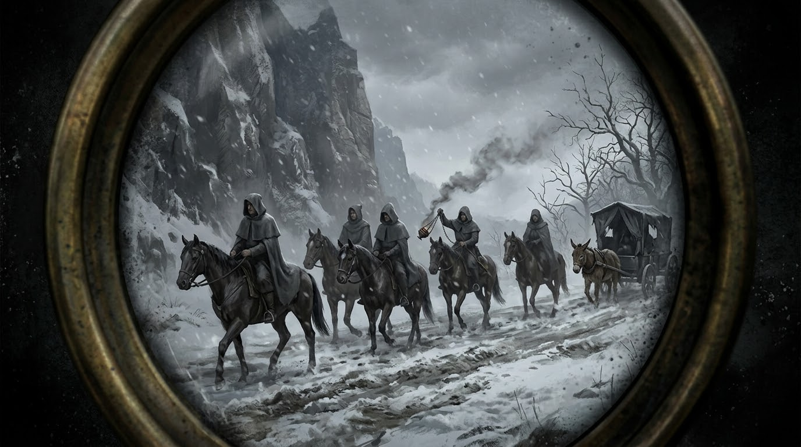
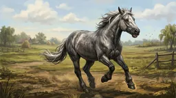
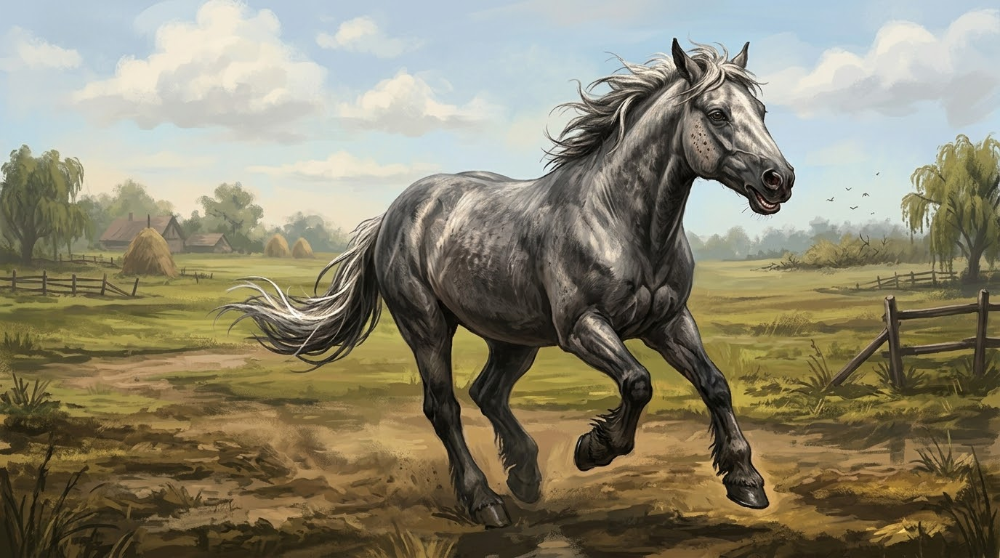

The Codex
Places, factions, sayings
Only what the page has shown. Names on the map that the story has not reached yet are names and nothing more.
Places
14Where he has been · 6
ISaint Ysolde's · the House of Menders

Saint Ysolde's above the cloud, and the Thousand Steps below it. · TapClick to enlarge The House of Menders at the top of the Thousand Steps, which takes the ones the lowland surgeons cannot fix and do not want to watch. Bells ring the hours; the air smells of snow and sulphur and boiled linen. Its infirmary hall is a long double row of cots, and the far ones hold the ones who no longer speak. Its gate opens on a court, with a wicket in the leaf for a courier's paper and a gatehouse whose window looks down on the Steps. Below the gate, where the springs steam on the lower terrace, the Confessors have made their fire.
First on the page: Prologue · II — The Steps
IIThe Thousand Steps
The switchback stair cut into the cliff below Saint Ysolde's, with cloud on one side and a wind that comes round the shoulder of the mountain with a knife in it. Everyone says a thousand. Wren has counted eleven hundred and seventeen.
First on the page: Prologue · II — The Steps
IIIThe winch-house · at the foot of the Steps


The winch-house where the stair comes out of the cloud, and Thorne's cart and two oxen in the snow. · TapClick to enlarge At the foot of the Thousand Steps, where the stair comes out of the cloud at the valley floor: a grey block with a thread of smoke of its own, and the cage the House's loads come up by. Rae Thorne's cart stands beside it with its shafts up and two oxen in the snow, standing the way oxen stand, as if they had been told to wait and meant to do it all winter. The grey cloaks came in at it three bells early, six riders, their cart and a censer, and one of them sat down on Rae's cart and put his boots up on the board. One grey cloak keeps it while the rest camp on the lower terrace.
First on the page: Prologue · II — The Steps
IVThe Lowmarch


A bell-house in the Lowmarch: the herald on its steps, and a cart going by. · TapClick to enlarge Darrow's country: he had the fastest feet in it, and its children count the lances in a rhyme. Its villages have bell-houses, from whose steps the Crown's heralds read that the Grace had left the knights of Harrow Ford, and its surgeons sent him north.
First on the page: Prologue · I — Harrow Ford
VThe river Wend
Cold and fast, brown with three days of rain off the hills at midsummer. It carried the Ninth downstream like driftwood.
First on the page: Prologue · I — Harrow Ford
VIHarrow Ford

![Harrow Ford on a misty morning: a high, fast, mud-brown river churning white over stones. On the near bank, seen from behind, mounted knights in mail and helms hold long lances with sodden pennons, and beside them an ox-cart carries a great slab of black stone in an iron frame. Across the water, tall grey standing stones lean on a gravel shore where a ragged line of fighters with spears waits at the edge, ox-carts piled with bundles and old people behind them, a goat among them, under the dark old trees of a forest.](../art/places/harrow-ford.jpg)
The Lances on the west bank, and the clans drawn up among the standing stones. · TapClick to enlarge A crossing of the Wend at the edge of the Thornwild, with standing stones on the far bank. Here, halfway across, the Grace went out of the Ninth, and Darrow's knee gave way with no blade near it.
First on the page: Prologue · I — Harrow Ford


Named, not yet reached · 8
VIIThe lower terrace · below the gate of Saint Ysolde's
The grey below the House's gate where the springs steam: the law's ground and nobody's, Confessor Ivo Marrant said, and made his camp there in the snow with four grey cloaks, in sight of the gatehouse window. The first of their fires was built while the court was still standing in the snow.
First on the page: Chapter 1 · Climax — The Law of Names
VIIIColdmere

![Coldmere at night in falling snow: a snow-roofed inn of stone and dark timber with a blank sign and warm-lit windows, a crowd standing still in the taproom behind the big window while a hooded figure in a grey cloak reads from a long paper. Grey horses stand tied at a rail. In the foreground an ox-cart loaded with sacks, a lantern hanging from it and its cloaked driver seen from behind, pulls away onto the dark road. Below, snowy roofs run down to a black, half-frozen lake under a wall of mountains and cloud.](../art/places/coldmere.jpg)
The inn at Coldmere, the night the list was read, and a cart going out into the dark ahead of the grey cloaks. · TapClick to enlarge A place below the mountain with an inn, where the Confessors' list of the Faithless was read aloud; the news climbed to the House by carter, lay brother and kitchen.
First on the page: Chapter 1 · Scene 1 — The Reading of the Knots
IXThe Holloway · the road
The road below the Steps, a brown thread across a white field from the infirmary window. Six grey riders and a cart were on it, with a smudge of smoke above them.
First on the page: Chapter 1 · Scene 1 — The Reading of the Knots
XThe Thornwild
The forest beyond the far bank of the Wend, home of the clans. In the dark under its trees a line of grey, armored figures stood very still while the river screamed.
First on the page: Prologue · I — Harrow Ford
XICalden
Where the Oathspire stands, and where the Faithless are told they may kneel anew. Somewhere in a warm room there, Darrow believes, his name was written first on a list.
First on the page: Prologue · III — The Binding
XIIThe Oathspire · in Calden
In Calden. The heralds say the Faithless will be received there with mercy and permitted to kneel anew; Maelis calls that the Crown's way, and fast.
First on the page: Prologue · II — The Steps
XIIIEdgemoor
The place in Darrow's name as the Reckoning writes it: Ser Darrow of Edgemoor.
First on the page: Chapter 1 · Scene 1 — The Reading of the Knots
XIVThe Greywater
The mountains north of the Lowmarch into which the surgeons sent him; Saint Ysolde's stands above the cloud on a shoulder of them.
First on the page: Prologue · II — The Steps
Factions
8IThe Ninth Lance
Darrow's company: sixty knights and sixty squires on the west bank of Harrow Ford. Nineteen came home. He knows the other forty-one names and does not say them.
IIThe Sixth Lance
Hollis Garrow's company, ordered with the Ninth to clear the ford.
IIIThe Second Lance
Aldric Vane's company, held in reserve. When the Grace failed it sat its horses on the west bank in perfect order, untouched, and watched.
IVThe Crown
The power whose Oathstones fill a kneeling knight with the Grace, and whose heralds proclaim that the Grace left the knights of Harrow Ford for the faithlessness of their oaths.
VThe Confessors


Through Sister Pell's glass: six grey cloaks, a cart and a censer on the Holloway. · TapClick to enlarge Grey cloaks who climb mountains for names, not for the Hollowed or the dying. Six of them ride the Holloway with a cart and a censer smoking in the snow, carrying a list of the Faithless at Saint Ysolde's that was read aloud at the inn in Coldmere: the ones they have come to bring down to kneel. Hollis's name is second. Asked who was first, Wren only looked at Darrow. Hollis's read: a captain who won't kneel is a song in every taproom, so they take the song down the mountain and make it kneel where people can see. Mercy is the word on the paper; the paper is the point. At the gate of Saint Ysolde's, Confessor Ivo Marrant read the list at the bars under the Knight-Confessor's seal; two of his men came through the wicket before Old Mercy rang, and went back out under the law of names. Marrant and four are camped on the lower terrace below the gate; the sixth keeps the winch-house.
VIThe House of Menders
The House above the Thousand Steps that takes the ones the lowland surgeons cannot fix and do not want to watch. Mender Vorne did the Binding there with an art the Crown burned people for, three hundred years ago.
VIIThe Faithless
What the heralds call the knights who came back from Harrow Ford, to be received with mercy at the Oathspire and permitted to kneel anew. Hollis's answer, on the cart: kneel to that. To Maelis it is a word for a knight the Grace has left that says it left because of him; asked whether he broke his oath, Darrow said no.
VIIIThe clans of the Thornwild
Fighters with long knives and boar spears, drawn up at the ford in a ragged screen in front of carts, old people, children and a goat, and looking behind them into the trees.

Sayings
31IKneel to that.
Hollis's answer to the heralds' proclamation, on the cart from Harrow Ford; nobody laughed (Prologue).
IIRide wide today.
what Aldric said at the ford (Prologue).
IIIThe quiet is a liar.
Maelis, on the soft season (Ch 1).
IVNobody's taking anyone.
Hollis to Benedek Orrin, of the Confessors: not up eleven hundred steps in the snow (Ch 1 Interlude).
VStone and Crown.
a soldier's oath; Hollis swears it over the nine steps he took on the wooden leg (Ch 1 Interlude).
VIFeed it or it goes out.
Maelis, of the built fire (Ch 1 Sc 2).
VIIThey'll count you up. Don't help.
Rae Thorne, the one thing she said to Darrow on the last cart, as they lifted him onto the litter (Prologue).
VIIIMercy's the word on the paper. The paper's the point.
Hollis to Darrow, of why the Confessors want the Faithless to kneel where people can see (Ch 1 Between).
IXIt holds things up. It doesn't mend them.
Maelis, of the Grace, at the linen press (Ch 1 Between).
XSit down or play.
Hollis, asked about his hands, over the knucklebones (Ch 1 Between).
XIDown's where they are.
Rae Thorne, from the door of the warming room, when Darrow asked to be sent down the Steps before the grey cloaks came (Ch 1 Sc 3).
XIII've carted men down to kneel since midsummer. I've not carted one back up.
Rae Thorne, at the same council (Ch 1 Sc 3).
XIIIAnd when we've given them one name, Captain, how many will the next writ carry?
Mother Ione, answering Darrow's offer to go down on the cage (Ch 1 Sc 3).
XIVAsk the bell if it's tired.
Sister Pell, asked whether she will ring Old Mercy dawn and dusk for as long as the grey cloaks care to wait; she has rung the House's bells fifty years (Ch 1 Sc 3).
XVIf the lay brothers tell the valley there's nobody up here, Captain, what does a sanctuary bell tell it at dusk?
Mother Ione to Darrow at her council, deciding whether Old Mercy rings (Ch 1 Sc 3).
XVIThe first two names on that list rode up in my cart.
Rae Thorne, on the gate wall, when Darrow told her that had been her road (Ch 1 Sc 4).
XVIIAn ox'll stand all winter.
Rae Thorne, of her oxen at the winch-house; a mule won't stand there (Ch 1 Between).
XVIIII have read to empty beds before. I find it steadies the hand.
Confessor Ivo Marrant at the bars, having been told at the winch-house fire that the Faithless went down the far side (Ch 1 Climax).
XIXThe Crown has no quarrel with men who can't answer.
Marrant, on why he did not read the far cots (Ch 1 Climax).
XXBells grow tired.
Marrant, going down to make his camp on the lower terrace (Ch 1 Climax).
XXIYou keep a fine bell. A little slow on the rope.
Confessor Ivo Marrant to Mother Ione, after Old Mercy rang late (Ch 1 Climax).
XXIIYou moved, when he read your name. I saw it. Nobody else did.
Hollis to Darrow, from the gatehouse window, after Darrow gave his name at the bars (Ch 1 Choice).
XXIIIYou've read to a full bed.
Darrow, through the bars to the Confessor, giving his name and rank in front of the whole House (Ch 1 Choice).
XXIVHidden, you were a lie they'd have found by the thaw. Named, you're a law they'll have to break where the valley can watch.
Maelis to Darrow in the court, after he gave his name at the bars; then: "That knee lies to me every morning. You didn't. Keep it that way." (Ch 1 Choice).
XXVNext time you mean to be brave, tell me first. So I don't run.
Wren Ashdown to Darrow on the wall-walk, the night he gave his name at the gate; she wrote his promise in her ledger (Ch 2 Between).
XXVII have never once given a name to a writ. Did you think I would start with yours?
Mother Ione to Darrow, in the chapel, the night of the gate (Ch 2 Between).
XXVIIRoad's the road.
Rae Thorne, at the wicket at first light, drawing up her hood to go down: her word for a thing that is what it is and will be walked anyway (Ch 4 Between).
XXVIIIFour strokes. Don't be clever at it.
Sister Pell to Darrow, going back up to her tower, having given him the dusk verse and a dusk to say it under the tower where she can see his mouth (Ch 4 Between).
XXIXMenders spend good meat on bad knights.
The kennel-master's view, said to the Prior and to the Captain of the Ninth's face (Ch 4 Sc 3).
XXXI'd not known the third line was yours to say.
Confessor Ivo Marrant to Darrow at the bars, having heard the Faithless captain say the dusk verse under the tower with the strokes (Ch 4 Sc 4).
XXXITell her the loop still holds.
The one line of Brother Anselm's own at the foot of the letter he wrote at the Captain's asking: nothing to the clerk who reads it, and to his sister, who puts a loop in her M so it will hold, the word that her brother is writing to her and not to him (Ch 4 Between).
Things
54IField-stones
slabs of black Oathstone in iron frames, one per lance, hauled on ox-carts; knights kneel and touch them before battle to be filled with Grace (Prologue).
IISister Pell's glass
the spyglass in the bell tower (Ch 1). Lent to Wren counted out, one glass, two caps, one strap, to be counted back by the next bell (Ch 1 Sc 4).
IIIThe dawn forms
the slow, dull work Maelis sets him each morning; afterward the leg lies a little straighter on the blanket, which is the point of them (Ch 1).
IVThe Reading of the Knots
Maelis's reading of the Binding: pipe between her teeth, two fingers either side of the kneecap, eyes shut. Darrow has stopped asking what she feels for; she has stopped answering (Ch 1).
VHollis's leg
the wooden leg the lay brothers made him: beech and a leather cup, fitting the way a boot fits someone else. The writ from Harrow Ford, folded and unread, now lies in its cup (Ch 1 Interlude).
VIThe writ
the order from command at Harrow Ford, the Sixth and the Ninth to clear the ford and the Second in reserve; Hollis broke its wax with his thumb without looking, kept it folded small inside his shirt, wax inward, until the morning the grey cloaks were seen, and then hid it in the cup of his wooden leg (Prologue; Ch 1 Interlude).
VIIThe two fires
Maelis's teaching behind the cell door: one fire is poured in and can be taken back by the hand that poured it; the other is built, kindled by one's own work, fed and kept, and cannot be poured or taken. The script of the Reckoning counts only the built one (Ch 1 Sc 2).
VIIIThe Emberwardens
an order that lived by the built fire; the Crown burned them three hundred years ago, halls, books and people, and made their name a curse: ember-mad (Ch 1 Sc 2).
IXRae's bell
the small brass bell on a cord at the carter's belt, which rings when the cart jolts; rung three times at the foot of the Steps, it was answered from the cloud (Prologue).
XKnucklebones
five yellow sheep's knuckles on a blanket, played in rounds, ones, twos, threes, fours, and then the stone: all five swept and the thrown bone caught on the back of the hand. Two captains with no coin play for a story told true, and the loser chants the rhyme (Ch 1 Between).
XIOld Mercy
the House's sanctuary bell. It is not the hour bell: it hangs silent unless the House is keeping somebody, and then rings at dawn and at dusk till they are gone and at no other time, and the valley knows its voice, so ringing it tells every village below that the House has someone it will not give up (Ch 1 Sc 3). While it rings at dawn and at dusk, no blade climbs the Steps or passes the gate, and no name under it is taken down against its will; miss one ringing and the law lapses till the next. Sister Pell says that once it has been rung the law has lapsed twice, both times for snow, and never on her rope (Ch 1 Sc 3). After her council Mother Ione held it, so the valley heard what it always hears from the House (Ch 1 Sc 4). At the gate, the first time it had rung for anyone in years, it rang late and dragging when Wren ran for the tower, and the Prior gave the Confessor the law of names to his face (Ch 1 Climax).
XIIThe wall-walk by the gate
the low wall-walk beside the House's gate, the one that can be reached from the court without a stair, which is the whole of Maelis's reason for allowing Darrow on it (Ch 1 Sc 4).
XIIIThe gate and the wicket
the House's gate is oak and opens on the court, with bars at the height of a man's face to speak and read through, and low in the oak a wicket, a door for one man stooping, barred on the inside, that opens a hand's width for a courier's paper under the law of guests; the gatehouse has an inside stair to a window and a post at the foot of its stair where a man can lean without seeming to. Two grey cloaks came through the wicket before Old Mercy rang while a third held it open; the House's shoulders shut it on him, and the two inside went back out under the law of names (Ch 1 Climax).
XIVThe law of guests
under it a courier's paper is taken at the wicket, Marrant said; and he was, whatever else, a courier (Ch 1 Climax).
XVThe Confessors' writ
the list of the Faithless at Saint Ysolde's, the ones the Confessors have come to take down the Steps and on to the Oathspire to kneel where everyone can watch (Ch 1 Sc 1); under a seal of blue wax the size of a child's palm, read at the bars slow so the court could count: Darrow first, Hollis second, then the Ninth's names and the Sixth's; the far cots are not on it (Ch 1 Climax).
XVIThe chapel
off the court, near enough to the hall that Darrow can walk to it and back without the stick (Ch 1 Sc 1). Mother Ione sits in its front pew each night by one candle and says the names of everyone under the House's roof, noticing which ones she has had to stop saying (Ch 2 Between).
XVIIThe Menders' vow
four words: to mend what climbs. Nobody who wrote it, the Prior says, thought to add and hand it down to whoever asks (Ch 2 Between).
XVIIIThe warming room
off the cloister, nine steps down and no rail; Mother Ione has the one good chair by its fire and offers it to nobody; the council over the Confessors' list met there (Ch 1 Sc 3).
XIXThe Grace
the warmth a knight takes from an Oathstone when he kneels: every ache goes quiet, the morning sharpens, and he can hear his own heart; old knights call it "the Crown's hand on your back" (Prologue). At Harrow Ford it went out of the knights mid-river, and when it came back to Darrow it was a thread too thin to do anything but show him how cold he was (Prologue). The heralds say it departed for the faithlessness of their oaths; Benedek holds that it forgives, and comes back to those who kneel (Ch 1 Between). Maelis, who has had her fingers on knees that carried it for twenty years: it holds things up, it doesn't mend them, and a man can run on a torn thing a long while with it under him and never know (Ch 1 Between). No one full of Grace has ever seen the script of the Reckoning (Ch 1 Sc 2).
XXThe Three Heartbeats
the moment at Harrow Ford when the Grace went out of the knights halfway across the Wend. On the first heartbeat the warmth left Darrow and frost bloomed on his mail in midsummer; on the second Thistle went down, the Ninth sagged in their saddles, and his knee gave as he planted and turned toward Tobin Marsh; the third he spent underwater, and saw Aldric Vane's horse on the west bank already turned and climbing out, one heartbeat early (Prologue).
XXIThe Binding
Maelis Vorne's old art for a knee that is undone rather than broken: a strand of his own sinew from below the kneecap, put where the cord was and bound in with emberthread. The Crown burned the people who knew it three hundred years ago. It is made of him, exactly as strong as he makes it and not one hair stronger, soft for a long time and softest just when it starts to feel good; it takes most of a year, maybe more; no Grace in it, nothing given, nothing anyone can take back. She would not bind the knee until the swelling was down, the leg straight and the thigh awake, because a Binding takes the measure of whatever it is tied to (Prologue). Seven weeks on, the Reckoning counts two Knots tied of seven, and Maelis calls this the soft season: the thread is changing from what she put in to what he will keep, and is weaker now than the day she tied it (Ch 1 Sc 1).
XXIIEmberthread
what Maelis binds with: a spool of something that wasn't thread, on black cloth beside a curved needle in a wooden box, glowing the deep orange of a coal when you blow on it and warm even from across the cot. It went in like warmth poured into a cold cup (Prologue).
XXIIIBitterleaf
what Maelis keeps in the pipe clamped in her teeth while she works. It is never lit, and her cell smells of it anyway (Prologue; Ch 1 Sc 2).
XXIVThe Reckoning
the pale, gold, angular script of light that came up over Darrow's palms at the infirmary window, hanging in the air the way the shape of the sun hangs in your eye; when he shut his eyes it was still there, sharper. Nobody has learned to read the script for three hundred years; he could read it anyway, and it was reading him. Maelis was not surprised ("So it's begun."): by her account it counts the built fire and nothing else, and most can't read it the first time (Ch 1 Sc 1–2).
XXVThe Knight Who Fell
the fainter numbers standing behind Darrow's own in the Reckoning, like men in a second rank: Might 15, Vigor 15, Finesse 18, Resolve 12. He didn't need anyone to tell him whose they were (Ch 1 Sc 1).
XXVIThe Hollowed
knights who come home from the field breathing and walking and doing as they are told, with nobody behind the eyes; everyone in the Lowmarch knows the word. In a season or two their families send them up a mountain with a chit and a lamp, and the far cots at Saint Ysolde's are where they end. Said down the row of the infirmary hall when Benedek was found at the feast's dawn bell (Ch 2 Sc 2).
XXVIIVaelish
the tongue Darrow speaks. The red-handed woman spoke it roughly on the east bank of the Wend ("Look at it. Look. Remember it."), after calling across the water in her own (Prologue).
XXVIIIThe black glass
a chip of black glass no bigger than a barleycorn that Maelis found under Hollowed Benedek's tongue; it takes the light and gives none back. "The far cots never had this" (Ch 2 Sc 2).
XXIXThe feast
the House's feast day: the feast bread carried down to the gate and given away, and the kitchen's book running wild. The lay brothers call it Saint Ysolde's bread, though not all of them: Ysolde, says one, was a bone-setter with a bad temper and a bell, and anyone who called her saint to her face would have got the bell (Ch 2 Sc 2).
XXXThe Grey Cot
Benedek's cot, under the far cots' grey blanket: the novices came to carry him to the far cots, Hollis would not let them, and the blanket came to him instead (Ch 2 Sc 3).
XXXIThe kitchen's book
the kitchen's wager-ledger, kept on the bread table, the running odds in pencil so they can be rubbed out; it takes a chore before a wick. On the feast it ran on the bread; after the Hollowing it ran on which cot is next, until the Captain bet the ovens on NOBODY (Ch 2 Sc 2, Between 7).
XXXIIEmber witchcraft
the Confessor's name for Benedek's Hollowing, given to the lay brothers who carried the feast bread down and carried back up the Steps with the empty baskets: the old curse the Crown burned out of the realm (Ch 2 Sc 3).
XXXIIIThe stretches of the Steps
The lay brothers' names for the runs of the Thousand Steps, which Wren counts by. From the bottom: the Shins, steep from the winch-house; the Elbow, where the stair goes into the cloud; the Long Reach; and last, below the gate itself, the Last Hundred (Ch 2 Sc 4).
XXXIVHob
The near one of Rae Thorne's two oxen, the slow one; the first of their names she has said, once, unasked (Ch 2 Sc 4).
XXXVDun
The off one of Rae Thorne's two oxen, beside Hob (Ch 2, Interlude).
XXXVIName-the-load
A carters' game played at every winch on the Holloway: name a load on the rope before it is up, by how it hangs. Rae Thorne plays it; salt sits like a stone (Ch 2, Between).
XXXVIIThe bridge at Calden
A bridge at Calden that Thistle would not cross until Darrow walked her over it backward, talking to her as if she were a lady; Aldric laughed from the bank (Ch 2 Sc 5, in Aldric's letter).
XXXVIIIThe seam on the east wall
A line of damp in the limewash a hand above the floor along the infirmary hall's east wall, where frost stood the night Benedek was taken; it runs the length of three cots and stops at the head of the Grey Cot. The hall says every wall in the House sweats (Ch 2 Sc 6).
XXXIXThe undercroft door
A low iron-banded door with a lock the size of a fist, behind the linen press at the dark end of the infirmary hall's east wall: the stair down to the undercroft. Shut since before Wren could count; the key is the Prior's, handed from Prior to Prior and never turned. Cold all the way through (Ch 2 Sc 7). The masons found the stair behind it when they cut the House's footings, and built on it rather than through it. Mother Ione turned the key at dusk with both hands, the first of her line of Priors to do so, and the door swung out on a stair of cut stone older than the House; the cold came up it to the height of a man's knee (Ch 3 Sc 3). The masons found the stair behind it when they cut the House's footings, and built on it rather than through it. Mother Ione turned the key at dusk with both hands, the first of her line of Priors to do so, and the door swung out on a stair of cut stone older than the House; the cold came up it to the height of a man's knee (Ch 3 Sc 3).
XLNights without
A margin the kitchen novice keeps in the kitchen's betting book since the Captain would not let NOBODY be paid out: a stroke for every dawn with no new grey blanket in the hall (Ch 3, Between).
XLIThe undercroft hall
Thirty-nine steps down from the undercroft door, cut in the rock and worn hollow in the middle: a hall older than the House, low and vaulted, its pillars cut from the living rock. Its walls are painted with a rank of men and women holding a small cloud of pale strokes over their open hands, and one knight kneeling at a black stone with the light running up out of him along a thread into the vault. Over its inner door, in the old hand: What is given can be taken. What is built is yours. Beyond the pillars the flags are white with rime, and the rime climbs the far wall (Ch 3 Sc 4).
XLIIThe almoner's satchel
The satchel in which the House's letters go down by the cage. The day before the first snow it went down sitting like paper and came back up that evening sitting like a stone, by Rae Thorne's hands at the bottom of the rope and Wren's tally at the top (Ch 3 Sc 5).
XLIIIThe crate to Calden
A nailed crate with no mark on it, small for what it weighed, that Rae Thorne carted at midsummer from a barge at the Wend landing to the lower door at Calden. By the time she backed up to the door there was frost on her cart-bed; the man at the door paid her and did not sign (Ch 3 Sc 5).
XLIVThe alcove under the row
A square hole cut low in the foot of the undercroft hall's east wall, a hand off the floor, about the size of a letter-satchel on its side, directly under the infirmary row. The frost of the whole hall runs to it and feathers up the wall above it. Inside, under the thickest rime, something dark the size of a thumb-joint is set in mortar that is new: pale, a trowel ridge still on it, a thumbprint pressed in while it was wet. Maelis would not let him touch it (Ch 3 Sc 6).
XLVThe handleless door
A shut door of grey wood in the undercroft hall, on the left going east, between two of the painted figures, its frame cut all round with the same strokes and dots as the lintel. No handle, latch, ring or keyhole. The frost runs up to its sill and goes round it. Maelis laid her hand on it a moment and said to leave it (Ch 3 Sc 6).
XLVIThe wine stair
A second way down to the undercroft: the old stair door where the House's wine was once laid down, below the kitchen end, opened by the almoner's stores key. Its stair comes out in the painted hall behind a pillar at the kitchen end, far from the iron-banded door and its flour. Brother Anselm carried the black sliver down it with a trowel and a lamp (Ch 4 Sc 1).
XLVIIThe black sliver under the row
What the frost comes from: a piece of black glass the size of the last joint of a thumb, standing on end in the rock at the back of the alcove under the infirmary row, with frost running out of its foot in straight lines and up the wall. It was shut in with a hand's depth of mortar laid like a lid over an old hole, and came up the Steps in the House's own letter-satchel the day before the first snow. It is one piece with the rock, like a root with the ground: Darrow's hand could not pull it, and the cold whitened his fingers to the second joint before he let it go; it stays in the wall. The mortar lid, with a thumbprint in its corner, is on the linen press (Ch 3 Climax).
XLVIIIThe letter from Calden
A letter for Brother Anselm that Rae Thorne carried up the Steps rather than leave in the cage: addressed in a neat upright clerk's hand with a long-tailed y, the same hand that wrote the direction on the Captain's three letters from his brother. Inside, his sister's words as the clerk wrote them (she is well kept; he has a thing to finish; then he may fetch her home), her private mark under them, and a lock of her dark hair tied with thread (Ch 4 Sc 2).
XLIXThe Small
The House's third bell: rung once, flat, when one of the far cots goes, so the House knows without being told. Darrow has never heard it; the Prior has not had a name to stop saying since he came up (Ch 4 Between).
LThe bells of the House
Three, by Sister Pell: the hour bell, which tells the day; Old Mercy, the sanctuary bell, which cracked in the Quenching's winter before any count she keeps and was broken up and poured again with the cracked piece in the pour, so that there is no other voice like hers and never will be; and the Small (Ch 4 Between).
LIThe kennels
Below the cloister, reached by a long ramp of worn boards with slats across it and not by a stair, so that a dog with a bad leg can be got up it. The kennel-master, a lay brother with a mallet in his belt, feeds the House's dogs on what the kitchen will not admit to and holds that the Menders spend good meat on bad knights; strays climb up in the first snow and the kitchen feeds them till he notices. The run looks down over the wall onto the lower terrace, and the grey cloaks who keep the cage count what comes up it: the oil was three jars short last week. In the run a grey bitch with a splinted hind leg, not the House's, who had bitten two lay brothers and the farrier and would not eat, bit the Captain's hand and then slept across his boot; the kennel-master has given him until the grey cloaks are gone (Ch 4 Sc 3).
LIIMirren's mark
An M with a loop in the valley, like a hook, so it would hold: the letter Anselm's sister would not make the way she was shown it at five, and has put on everything since, her clothes-chest, the lintel of their mother's house, and under her name on every letter to her brother, so he would know her hand even when it was not (Ch 4 Between).
LIIIThe forge
At the far end of the kennel yard, under the cloister wall: a forge that shoes nothing, since no horse has climbed the Steps in living memory. Laths stacked by length, a drum's tooth on the anvil, bell clappers on pegs from a thumb's size to a forearm's, a fire banked to a red eye, and by the door a board with the Lowmarch lance brands in chalk. The farrier works a leather cup to a stump a shaving at a time (Ch 4 Between).
LIVThe lance brands
Each lance burns its own mark onto its greys at the fair, the day they are bought, on the near quarter. The Second's is a tower, and the Second likes you to know it; the Sixth's a mule's shoe, which the Sixth did not choose and cannot be rid of; the Ninth's a gate, two posts and a bar. Darrow stood in the smoke at the fair while it went onto sixty horses (Ch 4 Between).
Beasts and others
1IThistle


Thistle before the ford, laughing in her way. · TapClick to enlarge Darrow's grey mare; went down in the Wend at Harrow Ford. Fate unknown (Prologue). Rae Thorne asked him whether he rode a grey at the ford, and did not say why (Ch 1 Sc 3). Asked why on the gate wall, she said carters look at horses (Ch 1 Between). On the cage head Rae Thorne told him of a grey mare at a dealer's on the Holloway, long in the back, come out of the Wend below the ford, short behind, who will not take a bridge forwards; whoever stands the dealer's debt at Coldmere can lead her off (Ch 3 Sc 5). On the cage head Rae Thorne told him of a grey mare at a dealer's on the Holloway, long in the back, come out of the Wend below the ford, short behind, who will not take a bridge forwards; she can be had for what the dealer owes at Coldmere (Ch 3 Sc 5). On the cage head Rae Thorne told him of a grey mare at a dealer's on the Holloway, long in the back, come out of the Wend below the ford, short behind, who will not take a bridge forwards; she can be had for what the dealer owes at Coldmere (Ch 3 Sc 5). At the wicket at first light Darrow said her name to Rae Thorne, the first time he had said it since the river: she carried him into the Wend and never asked the why or the where, and he will not have her stand in a dealer's byre under anyone's word but his own. Rae went down the Steps saying she would tell her (Ch 4 Between). At the wicket at first light Darrow said her name to Rae Thorne, the first time he had said it since the river: she carried him into the Wend and never asked the why or the where, and he will not have her stand in a dealer's byre under anyone's word but his own. Rae went down the Steps saying she would tell her (Ch 4 Between). At the wicket at first light Darrow said her name to Rae Thorne, the first time he had said it since the river: she carried him into the Wend and never asked the why or the where, and he will not have her stand in a dealer's byre under anyone's word but his own. Rae went down the Steps saying she would tell her (Ch 4 Between).

Songs and verses
3IThe knucklebones rhyme
chanted by whoever is losing: Three for the knight who won't come down, / four for the bell and five for the hand. (Hollis, losing the stone to Darrow, Ch 1 Between).
IIThe Lowmarch counting rhyme♪
♪ Count the Lances a children's counting rhyme: Count the lances on the west bank, child, / count them, one through nine. / Count them going, count them coming home, / and never get the same sum twice. (Prologue, epigraph).
IIIThe dusk verse
Said, not sung, to the rope by whoever rings Old Mercy at dusk, one line to each of four strokes; nobody below hears it. Day's done and the door's shut. / The blade stays below. / What climbed, we keep. / And the bell says so. Sister Pell knocked it out on the undercroft door for Darrow and told him the third line is not his to say (Ch 4 Between).